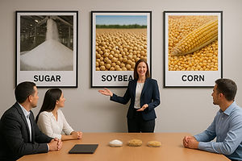

Products
Bulk and bagged GMO soybeans and corn.

About Us
Who We Are
AgroExpress Ltda. is a third-generation farming company built on decades of family tradition in Brazilian agriculture. From our roots as growers of GMO soybeans and corn, we have grown into a modern, independent agrobusiness proudly combining heritage with innovation.
Today, we own and operate three productive farms alongside the larger family-owned farmland, allowing us to cultivate and process crops at scale while maintaining our values of quality, reliability, and integrity.
Let's Connect
What We Do
Bulk and bagged GMO soybeans and corn.
FOB (Free on Board) and CIF (Cost, Insurance and Freight).
Any Safe World Port (ASWP).
We hold all Brazilian government export licenses and comply with international import requirements, ensuring that every shipment is secure, traceable, and globally compliant.
Contact Us for Product Specifications
Growing Beyond Our Fields
While our production is ample, we also collaborate with a trusted network of Brazilian growers. This partnership allows us to meet large-volume orders and provide flexibility when demand exceeds our own harvest.
Whether you require a spot purchase, a contract order, or wish to secure future crop allocations, AgroExpress is positioned to support your needs, including planning ahead for 2026 supply requirements.
Request a QuoteOur Commitment
By uniting family farming values with professional export infrastructure, AgroExpress delivers consistent, high-quality products to customers worldwide.
Get in Touch